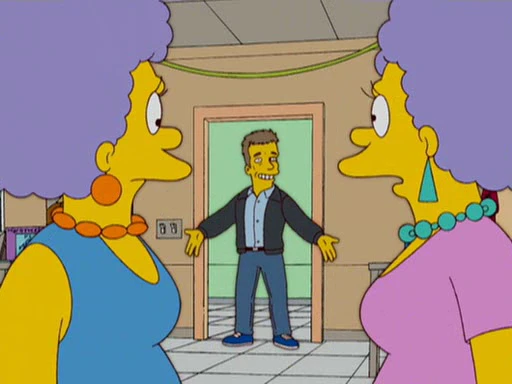
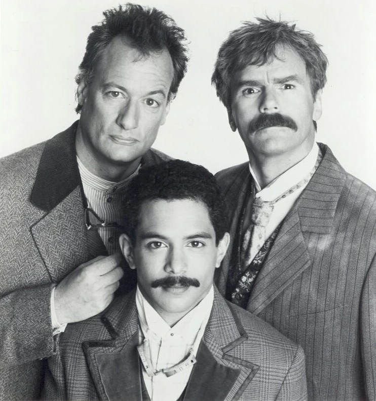
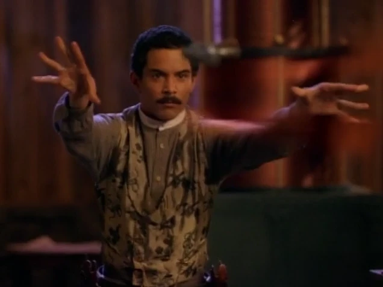

Legend (1995) is really good, then it's over
I recently got put onto the existence of Legend, a sci-fi western television show from 1995, starring none other than the three greatest names in the history of television. Richard. Dean. Anderson.

Did someone mention my names?
It follows a washed up, gambling, drunk author of dime novels called Earnest Pratt, who is caught up in a real life version of his character, Nicodemus Legend, a heroic, well mannered and chaste man. While reluctant at first, he softens when he realises that he can do some good for people as Legend, while also enjoying some of the perks of being a town hero. This brings in the other leading character of the show, Janos Bartok, played by a captivating John de Lancie, who was the one that encouraged the reality of the Legend character to prevent his scientific exploits drawing too much attention to himself. Bartok is also assisted by Huitzilopochtli Ramos, played by Mark Adair Rios, who ended up being the best part of the short-lived show for me by the end.

I love this square format promotional image of the main cast.
I originally decided to watch the show as a bit of a novelty, being a huge fan of Richard Dean Anderson in Stargate SG-1, which is only a few years after this. That combined with releasing the year I was born and having Michael Piller as the creator was enough for me to give it a go. Initially I was a bit disappointed with the pilot episodes, feeling like they dragged on a bit and Pratt/Legend hadn’t quite found the balance of lovable rogue that he would later. I will admit that I was also having a pretty bad week and maybe just wasn’t in the headspace for the more cynical moments in the opening episodes. However when I returned after a few days for the next episode I became immediately hooked and devoured the limited rest of the episodes in a few days, growing more and more fond of the shows style and the main cast characters.
It is a shame that like many of it’s 90’s contemporaries, Legend lacks any real interesting female characters, with most being written as objects of attraction or distressed damsels needing help from the titular hero. I think that episode 4 character of Libbie Custer was a lot of fun to watch but ultimately just exists to push Legend towards a more noble path using their past relationship. Molly Hagan as Paytents in episode 11 “Clueless in San Francisco” breaks this mould the most for me and gives a great performance to a standout episode. Janis Paige, playing Ernest Pratt’s mother in that episode is also fantastic. Where I think the show does better than others of it’s time is with race. While never delving particularly deep into any particular culture and definitely still leaning on a lot of stereotypes, I think this lets it avoid the mistakes of Star Trek: Voyager’s well documented issues with the Chakotay character. When Ramos is confronted with his Aztec heritage in the final episode, his distress over his ignorance of his own culture is extremely believable and interesting, making it all the more devastating that the show ends there.
Mark Adair Rios as Ramos is a tour de force throughout the entire show, often in the shadow of de Lancie and Anderson, but always holding his own with less of the script to work with. The running gag that he seems to have studied for years in whatever topic is relevant at Harvard is so believable given the confidence of his performance.
